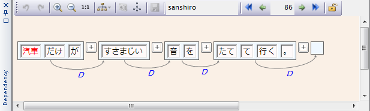
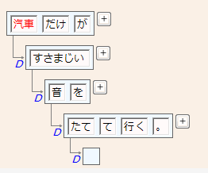
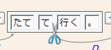
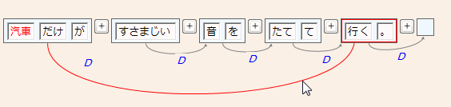
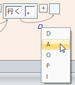
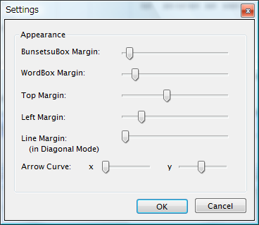

ChaKiは、文節・係り受けを編集するための"Dependency"パネルを持っています。 このパネルは、メニュー"View"-"DependencyEdit Panel"コマンドにより表示・非表示が切り替えられますので、 もし"Dependency"というタイトルを持つパネルが見当たらなければ、このコマンドにより表示状態にして下さい。
文脈を表示する操作と共通になりますが、KWIC結果ビューに表示されている任意の文において IndexカラムからSenカラムまでの範囲（つまり文本体が表示されていない場所）をダブルクリックすると、 その文の文節・係り受け編集が開始されます。Dependencyパネルにはその文の文節・係り受け構造が表示されます。 下図に例（既にCabochaによる自動解析が行われている場合）を示します。

文はまず文節に分けられて文節Boxのリストとなっており、各文節はさらに語に分けられて 語Boxのリストになります。各文節Boxからは必ず１つの係り受け矢印が出ており、他の文節Boxに 入っています。赤い文字の語BoxはKWICの中心語を示しています。 なお、文末に存在する空白のBoxはダミーの文節Boxであり、各文に自動的に挿入されて 係り先のない文節の受け口となります。係り受け矢印に付加される"D"という文字は係り受けの タグで、係り受けの種類を示しています。
上方にあるのは表示・編集のためのツールバーで、それぞれの機能は左から順に次の通りです。
| アイコン | 機能 | カテゴリ |
| 操作をUndoする | 編集 | |
| 操作をRedoする | 編集 | |
|
|
表示を拡大する | 表示 |
|
|
表示を縮小する | 表示 |
|
|
表示をデフォルトサイズにする | 表示 |
|
|
表示形式を変更する | 表示 |
| スナップショットをクリップボードにコピーする（未実装） | その他 | |
| 係り受け構造をGraphVizのDOT形式でセーブする | その他 | |
| 編集内容をDBにセーブする | 編集 | |
| 編集対象の文の属するコーパス名 | 編集 | |
| コーパス内のひとつ前の文に移動する | 編集 | |
| KWIC結果リスト内のひとつ前の文に移動する | 編集 | |
| 編集対象の文ID（クリックすると変更できます） | 編集 | |
| KWIC結果リスト内のひとつ後の文に移動する | 編集 | |
|
|
コーパス内のひとつ後の文に移動する | 編集 |
| 編集を終了し、DBのロックを解除する | 編集 |
表示形式として、Diagonal表示、Horizontal表示、およびMorphemes表示の3種類が用意されています。 上の図はHorizontal表示ですが、Diagonal表示を選択すると下図のような表示に切り替わります。 表示系のコマンドは編集内容には影響しませんので、随時見やすい形式に調整して編集を行います。 （Morphemes表示については形態素を編集するで説明します。

また、パネルが狭い場合は、パネルのタイトルバーをダブルクリックすることでFloating状態にして 独立にパネルのサイズを変更することもできます。（再度ダブルクリックすれば元のDocking状態に戻ります）
では次に、具体的に文節・係り受けを編集する基本的な方法を説明します。
(1) 文節を切断する
上の例で、「たてて」と「行く」の間で文節を切り離したい場合、語を表すBoxの間に マウスを持っていくと、カーソルが下図のようにハサミの形に変わります。 この状態で左クリックすると文節を切り離すことができます。
切断された右の文節が元の係り受けを継承し、左の文節は自動的に右の文節に係るように変更されます。

※ カーソルの切り替わる範囲が狭すぎると感じる場合は、語Boxの間隔をカスタマイズします（後述）。
(2) 文節を結合する
文節Boxの間にある"+"ボタンを押すとその両側の文節を結合して一つの文節にすることができます。 （この例では結合する文節はありませんので、図は省略します。）
(3)係り先を変更する
矢印を持つ係り受けの線をクリックし、変更したい文節Boxの上までドラッグすると、係り先をその文節に 変更することができます。

係り受けが交差する結果となった場合は、互いに交差する線が黄色で表示されます。
(4)係り受けタグを変更する
係り受けタグ上でマウスを左クリックすると、メニューがポップアップし、タグを変更することができます。 ここでリストされるタグの種類は現在のところ固定ですが、将来はタグセット定義できるようにする予定です。

以上を組み合わせて係り受けが修正できたら、保存ボタンをクリックしてDBに編集内容を反映します。
形態素解析まで済んでいるコーパスに順に係り受けのアノテーションを施していく場合には、 「コーパス内の次の文へ移動する」コマンドにより順次編集を進めていくような使い方になると思われます。
また、係り受けを自動解析したコーパスに対して手動で修正を施す場合は、KWIC検索によって似たような 係り受け構造を持つ部分をリストして、「KWIC内の次の文へ移動する」コマンドによりまとめて修正を 行うことが考えられます。（このような場合のために、修正内容をマクロ化してバッチ処理できるように する機能を検討中です。）
表示のカスタマイズ
Dependencyパネル上の、何もヒットしない場所で右クリックを行うと、下図のようなダイアログが表示されます。 このダイアログを通じてさまざまな表示上のマージン値や係り受けの矢印形状などを変更することができます。
